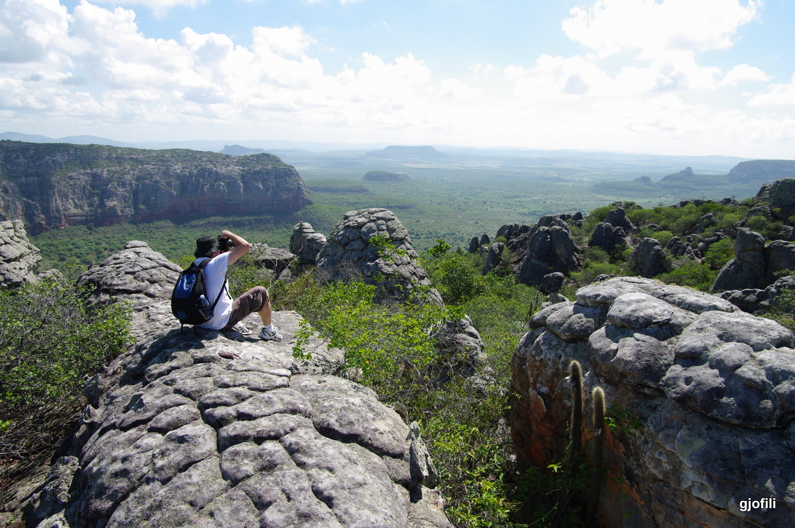
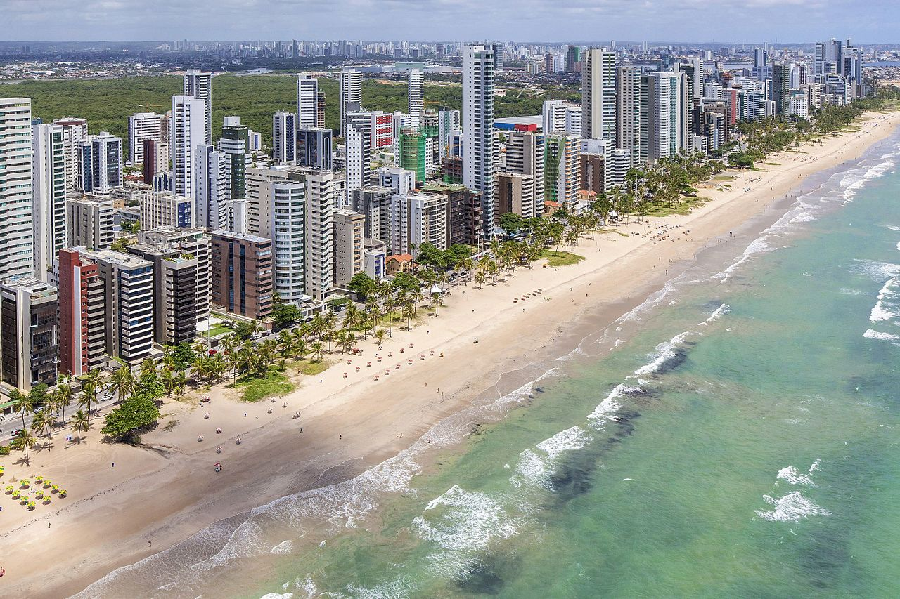
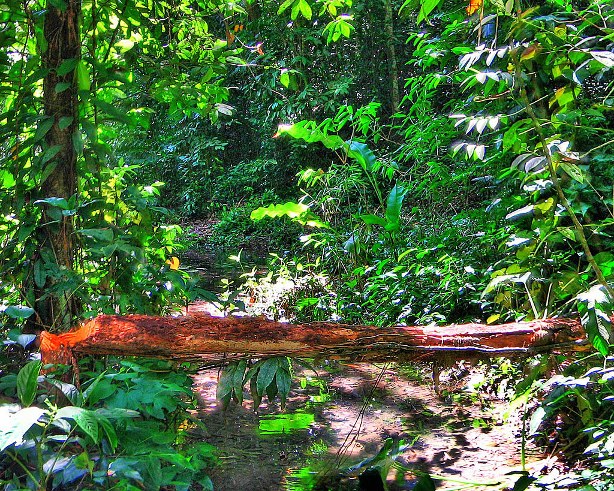

by Ángel Gómez Prol
13/10/2022
The coastal area is fertile, and was formerly covered by the humid Pernambuco coastal forests, the northern extension of the Atlantic Forests (Mata Atlântica) of eastern Brazil. It is now occupied by extensive sugar cane plantations. It has a hot, humid climate, relieved to some extent by the south-east trade winds.
Recife is the fourth-largest urban area in Brazil with 4,054,866 inhabitants, the largest urban area of the North/Northeast Regions, and the capital and largest city of the state of Pernambuco in the northeast corner of South America. The population of the city proper was 1,653,461 in 2020. Recife was founded in 1537, during the early Portuguese colonization of Brazil, as the main harbor of the Captaincy of Pernambuco, known for its large scale production of sugar cane. It was the former capital Mauritsstad of the 17th century colony of New Holland of Dutch Brazil, established by the Dutch West India Company. The city is located at the confluence of the Beberibe and Capibaribe rivers before they flow into the South Atlantic Ocean. It is a major port on the Atlantic. Its name is an allusion to the stone reefs that are present by the city's shores. The many rivers, small islands and over 50 bridges found in Recife city centre characterise its geography and led to the city being called the "Brazilian Venice". As of 2010, it is the capital city with the highest HDI in Northeast Brazil and second highest HDI in the entire North and Northeast Brazil (second only to Palmas). The Metropolitan Region of Recife is the main industrial zone of the State of Pernambuco, major products are those derived from cane (sugar and ethanol), motor vehicles, ships, oil platforms, electronics, software, and others. With fiscal incentives by the government, many industrial companies were started in the 1970s and 1980s. Recife has a tradition of being the most important commercial hub of the North/Northeastern region of Brazil, with more than 52,500 business enterprises in Recife plus 32,500 in the Metro Area, totaling more than 85,000.
The Pernambuco coastal forests occupy an 80 km-wide strip along the Atlantic coast of northeastern Brazil in the states of Pernambuco and Alagoas. The forests extend from near sea level to 600–800 metres (2,000–2,600 ft) in elevation, on the windward slopes of the Borborema Plateau. The Goiana River of Pernambuco marks the forests' northern extent, and the Mundaú River of Alagoas the southern extent. The ecoregion is bounded on the east by the Atlantic Ocean and the coastal Atlantic Coast restingas forests and Rio Piranhas mangroves. To the east, the forests transition to the drier Pernambuco interior forests and Caatinga.
Come back to the main page